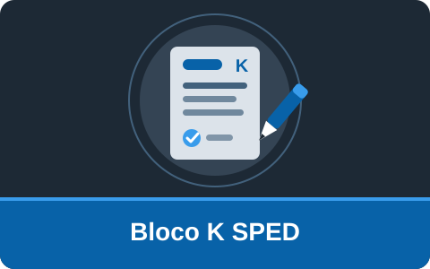
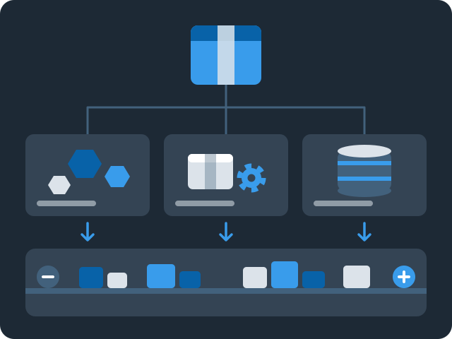
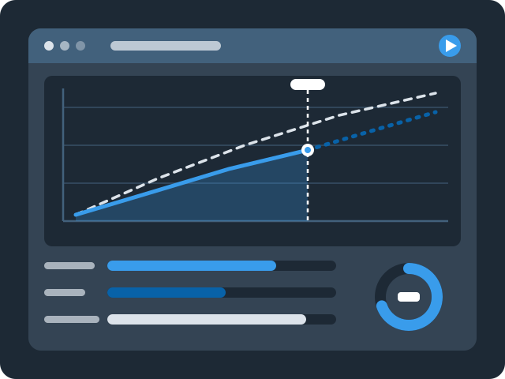

Gestão de Produção com
eficiência e qualidade!
Melhore sua performance em todas as etapas dos processos de
produção, elevando sua produtividade e seus rendimentos.



Integre todos os setores do seu negócio com nossas ferramentas!

Ordens de Produção
Para cada produto que você irá produzir, deve criar uma ordem de produção. Dessa forma, você acompanha as etapas de cada OP, facilita o controle de estoque a avaliação de qualidade dos itens.Com nosso ERP em Nuvem, também é possível criar subordens de produção com base na primeira OP cadastrada. Isso ocorrerá quando o produto utilizado como matéria prima de um item, também precisa ser produzido pela empresa.Outra importante funcionalidade é o descarte de itens produzidos, que ocorre quando a mercadoria produzida não obtiver a qualidade mínima estipulada pela empresa para comercialização.
Produtos Compostos
Tenha estoque e demais módulos do seu negócio totalmente integrados ao seu controle de produção.O Sistema de Controle de Produção do SIGE Cloud permite cadastrar produtos acabados ou compostos, informando todos os itens que os compõem, como matérias primas e subprodutos. Uma vez finalizada a Ordem de Produção, automaticamente é efetuada a baixa da matéria-prima no estoque, e a entrada dos itens produzidos.


Controle de Qualidade
Você quer oferecer o melhor a seus clientes e que eles tenham sua empresa como referência em qualidade? Mas como está se perguntando, como controlar o nível de excelência do que sua empresa produz?Ao contar com o módulo de PCP do SIGE Cloud você tem ferramentas de fácil utilização, para avaliar a qualidade de cada item produzido. Através de um check list, criado por você e sua equipe, com todos os itens que devem ser verificados em determinado produto é possível informar ao sistema se o item atingiu a qualidade estabelecida para que sua comercialização seja possível. Quer que sua empresa seja referência em qualidade? Conte com mais esse recurso disponível no SIGE Cloud.
Simulador de Produção
Se você está buscando formas de controlar a previsão de produção e o consumo de matérias-primas, em nosso Simulador de Produção, você encontra! O Sistema ERP Online SIGE Cloud conta com uma infinidade de recursos criados e constantemente atualizados para melhor sua experiência na Gestão Empresarial.Um dos principais métodos de controle e acompanhamento que disponibilizamos é o módulo de relatórios, dentre eles o Relatório de PCP chamado Simulador de Produção. Trata-se de um gráfico usado para ilustrar o avanço do processo produtivo, em que é possível monitorar demandas de insumos e demais recursos a serem utilizados para a execução de ordens de produção.


Bloco K - SPED Fiscal
Se você trabalha com Produção, já sabe que a partir de agora todas as empresas do segmento de industrialização estão obrigadas a apresentar seus relatórios de Estoque e Produção no SPED Fiscal. Em nosso ERP esse arquivo é preparado em instantes, contemplando todas as exigências que envolvem o Bloco K.Essa mudança fiscal obriga os gestores a atentarem-se mais ao gerenciamento de seus estoques e organizar-se fiscalmente. Por isso, o melhor caminho para adaptar-se a essa mudança é contar com um Software Integrado de Gestão Empresarial, como o SIGE Cloud.
Entre em contato para saber mais:
Não precisa cartão de crédito;
Se desejar, receba uma apresentação comercial durante os testes.